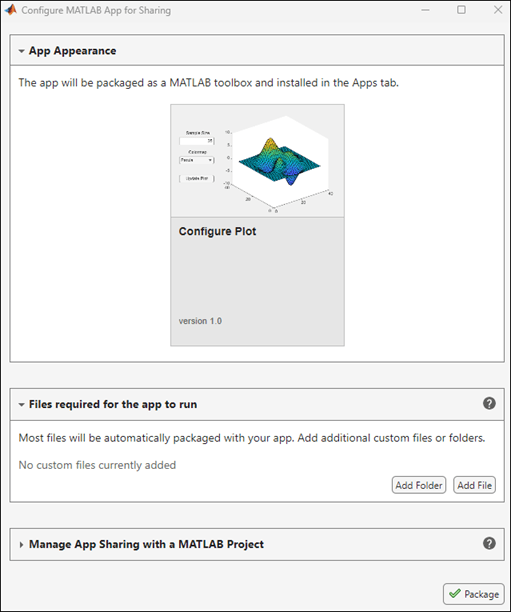

Package Apps in App Designer
After creating an app in App Designer, you can package it into a single
toolbox installation file (.mltbx). With the packaged file, you can:
Share the single file with app users so they can easily run the app.
Run the app directly from the Apps tab of the MATLAB® Toolstrip.
Package App
To package an app directly from App Designer, first open the app. In App Designer, on the Designer tab, select Share > MATLAB App. This action opens the Configure MATLAB App for Sharing dialog box. Review the sections, and then click Package.

App Appearance
The app appearance includes the app name, thumbnail, and any additional optional details about the app, such as the description, author, and version number. To change the app appearance before packaging, on the Designer tab, click App Details and specify sharing details.
Files Required for App to Run
Most files that the app uses are automatically packaged with the app, and you do not need to add them in the dialog box. For example, the packaging tool automatically detects and includes these files in the packaging step:
Images or icons that your app uses
Helper functions saved as
.mfiles that your app code callsCustom UI components that are included in your app
Data files that your app imports, such as spreadsheets
However, there are some files that the packaging tool cannot detect. If your app requires any of these types of files, add them as custom files in this section:
Resources referenced from an HTML source file for an HTML UI component
Resources referenced from external language interfaces, such as files referenced from C++ or Python® code called from MATLAB
Function handles saved in MAT files
Manage App Sharing with MATLAB Project
In most cases, packaging your app directly from App Designer is the easiest way to create an app artifact to share. However, certain packaging configuration options, such as specifying supported platforms or MATLAB releases and saving configurations for re-deployment, are available only when you use a project. If you use a project to manage app sharing, the project also manages all the files and folders associated with your app. For more information about projects, see Create Projects.
If you choose this option, MATLAB either prompts you to create a new project for your app, or uses an existing project if one already contains the app.
For more information on the packaging steps after you create a project, see Create and Share Toolboxes.
View Packaged Artifacts
When you package your app, MATLAB creates a folder named release in the same folder as your
main app file. This folder contains the packaging artifacts. For example, if your main app
file is named myApp.mlapp, the release folder contains
these artifacts:
myApp.mltbx— The packaged app, created as an MLTBX file. Share this file with others or use it to install and run the packaged app.deploymentLog.html— The packaging log file. Use this file to help troubleshoot any issues with the packaging process.
Troubleshoot Packaging Issues
You can view any issues with the packaging process. While App Designer packages the app, the MATLAB App Packaging Process dialog box displays the packaging status.
If you encounter issues, click the Open Log button in the dialog
box. This button opens the deploymentLog.html file, which contains a log
of the packaging process. Use the log to identify and resolve any issues, and then perform
the packaging steps again.
Install and Run Packaged App
To install a packaged app, use one of these approaches:
In MATLAB, on the Apps tab, click the Install App button. Navigate to the MLTBX file and open it.
Double-click the MLTBX file in the Files panel.
After you install the app, it appears in the Apps section of the Apps tab. Run the app by clicking the app icon.
Share Packaged App
You can share the MLTBX file directly with your users for them to install.
Alternatively, you can share your app as an add-on by uploading the MLTBX file to MATLAB Central File Exchange. Your users can find and install your add-on from MATLAB by performing these steps:
On the Home tab, in the Environment section, click
 Add-Ons.
Add-Ons.Find the add-on by browsing through available categories on the left side of the Add-On Explorer window. Use the search bar to search for an add-on using a keyword.
Click the add-on to open its detailed information page.
On the information page, click Add to install the add-on.
Note
Although MLTBX files can contain any files you specify, MATLAB Central File Exchange places additional limitations on submissions. Data and image files are typically acceptable. However, you cannot submit your app to File Exchange when it contains any of these types of files:
MEX files.
Other binary executable files, such as DLL files. (Data and image files are typically acceptable.)